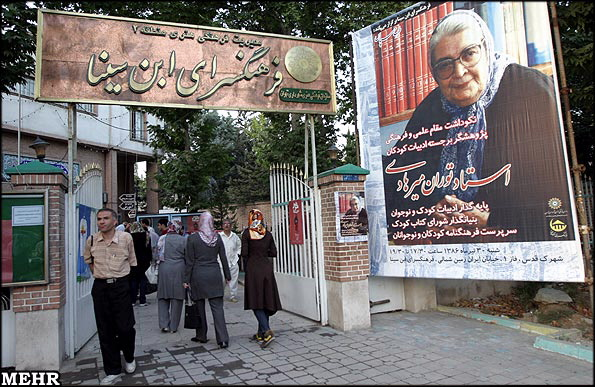
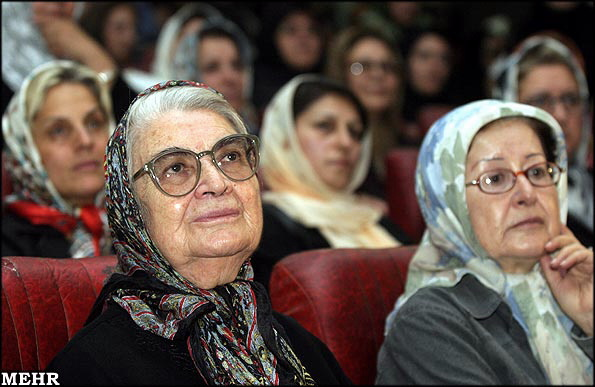
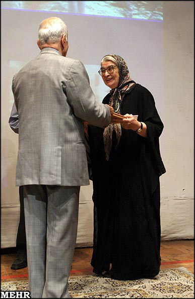

مراسم نکوداشت مقام علمی و فرهنگی توران میرهادی؛ پژوهشگر برجستهی ادبیات کودک؛ روز شنبه 30 تیر ماه 86، با حضور نویسندگان و محققان ادبیات کودک، در فرهنگسرای ابن سینا برگزار شد. فرهنگسرای ابن سینای منطقه شهرک قدس تهران، در کمتر روزی مانند این روز چنین جمعیتی را به خود دیدهبود، اما در این روز با برگزاری مراسم نکوداشت این پژوهشگر حوزهی ادبیات کودک، آنقدر جمعیت در داخل سالن حضور داشت که عدهای در راهرو نشستند. برخی در حیاط و بعضی دیگر هم در پیادهرو به سخنرانیها گوش سپردهبودند. در محوطهی فرهنگسرا نیز کتابهای این پژوهشگر برجسته و برخی دیگر از نویسندگان کتاب کودک از جمله هوشنگ مرادی کرمانی، که خود در مراسم حضور داشت و لحظهای نیز برای تقدیم جوائز به توران میرهادی فراخوانده شد به فروش میرسید. در این بخش فروش کتاب نیز شاهد حضور انبوه مادران جوانی بودیم که دست در دست کودکشان کتابی میخریدند و اگر نویسنده در آن مراسم حضور داشت، آن را به امضای نویسنده کتاب میرساندند

در ابتدای این مراسم که سخنرانان برجستهای در آن به سخنرانی پرداختند و سهیل محمودی اجرای آن را بر عهده داشت، دکتر کیهان محمدی - مدیر فرهنگسرای ابن سینا و برگزارکنندهی بزرگداشت توران میرهادی- به ایراد سخنانی پرداخت.
وی گفت: تمام فرزندان ایران توران میرهادی را به عنوان پایهگذار ادبیات کودک و نوجوان میشناسند و خدمات ارزندهی وی را طی سالهای دراز به یاد دارند. اغلب افرادی که در این سالن برای بزرگداشت این بانوی فرهیخته حاضر شدهاند زمانی از شاگردان وی در مدرسه فرهاد بودهاند. درست مثل خود من که زمانی شاگرد او بودهام. او در ادامه اضافه کرد: نقش توران میرهادی درعرصهی پژوهش ادبیات کودک چنان تاثیرگذار است که از وی میتوان به عنوان یکی از خادمان ارزندهی عرصهی آموزش و پرورش نام برد.
اما سخنران بعدی مدیر مسئول نشریهی نگاه نو ؛ علی میرزایی بود که خود نیز نویسنده و پژوهشگر ادبیات کودک و نوجوان است. او در سخنان خود با اشاره به اینکه حرف زدن درباره توران میرهادی مانند نثر سعدی دارای ویژگی سهل و ممتنع است گفت: زندگی فرهنگی میرهادی نظیر چشمهی جوشانی است که همواره بر بستر منظمی جاری بوده و برگزاری چنین مراسمی مسلما به این خاطر است که به ژرفای زندگی وی توجه بیشتری شود. این پژوهشگر ادبیات کودک در ادامه افزود: با پیش رو داشتن کارنامهی پربار و پنجاه سالهی توران میرهادی میتوان دریافت که وی طی این سالها خدمات ویژهای در حیطهی ادبیات کودک و نوجوان انجام دادهاست و با به جای گذاشتن تالیفات، به خصوص سرپرستی فرهنگنامهی کودکان و نوجوانان، سرمایهی عظیمی را برای نسلهای فرهنگی بعد از خود به یادگار گذاشتهاست.
سپس محمدهادی محمدی مدیر موسسهی پژوهشی تاریخ ادبیات کودکان برای سخنرانی به روی صحنه رفت و گفت: قرار است علاوه بر برگزاری این مراسم، بزرگداشتی در دهم آبان ماه جاری نیز برای توران میرهادی برگزار کنیم. بررسی و نگاه جامعهشناسانه به کنشهای توران میرهادی بیانگر زاویهی دید وی نسبت به پیرامون خویش و همچنین ادبیات است. دوران کودکی و جوانی میرهادی طی فراز و نشیبهای بسیار طی شد اما او با استمرار در فعالیتهای خود توانست هر یک را به بار بنشاند.
محمدی افزود: به بیان سادهتر با حضور توران میرهادی در عرصهی ادبیات کودک و نوجوان، سیمای کودک ایرانی به یکباره دگرگون شد. زیرا نهاد کودکی نهادی فراگیر است که چندین نهاد را زیرمجموعهي خود قرار دادهاست. فراموش نکنیم که شخصیتهایی چون دکتر باقر هوشیار و جبار باغچهبان تاثیرگذاری فراوانی بر اندیشههای میرهادی داشتند.
محمدی در ادامهی سخنان خود نیز چنین گفت: نقش سازندهي توران میرهادی را نمیتوان در عرصههایی چون کودک و خانواده، خانواده و جامعه، سنت و مدرنیته نادیده گرفت. در واقع روند و میزان فعالیت و حرکت او در عمق این لایههای مهم اجتماعی بسیار کارساز بودهاست. امروز اگر از من به عنوان یک پژوهشگر پرسیده شود که مهمترین شاهکار زندگی توران میرهادی چه بودهاست من به شخصیت نهادگذار وی اشاره خواهم کرد

مدیر موسسهی پژوهشی تاریخ ادبیات کودکان و نوجوانان چنین ادامه داد: درحال حاضر چیدمان روابط اجتماعی به این شکل است که نیاز کودک مقدم بر نیاز افراد بزرگسال است. توران میرهادی و گروه همکاران وی با مشارکت و راهاندازی نهادهای فرهنگی و آموزشی توانستند هویت کودک ایرانی را به خوبی بازسازی کنند که از میان این نهادها میتوان به مدرسه فرهاد، شورای کتاب کودک و... اشاره کرد. ناگفته نماند که میرهادی برای رسیدن به این نقطه کار بسیار کرد و رنج بسیار برد.
دکتر عباس حری مدرس کتابداری دانشگاه تهران سخنران دیگر این برنامه بود. وی در بخشی از سخنان خود گفت: مهمترین ویژگی توران میرهادی، ترویج علم او بودهاست. در سالهایی که میرهادی به تاسیس مدرسه فرهاد پرداخت ساختارشکنی در فضای آموزشی کشور کاری دشوار بود. اما او با نهایت درایت این کار را انجام داد. وی در این مدرسه به تاسیس کتابخانه پرداخت و اعتقاد محکمی داشت که کتابخانه همواره میانجی معلم و شاگرد بودهاست.
این استاد کتابداری سخنان خود را چنین ادامه داد: شاید بتوان از تالیف فرهنگنامه به عنوان یکی از تاثیرگذارترین کارهای توران میرهادی نام برد. فرهنگنامه ای که به ظاهر نوعی دایرهالمعارف به شمار میرفت اما دارای فرهنگ و اصول خاصی بود. مطالب فرهنگنامه تا پیش از انتشار بارها میان ویراستاران و نویسندگان آن در رفت و آمد است. درواقع میرهادی بر روی مطالب آن چنان حساسیتی دارد که زبانزد است. حتی به خاطر دارم در مقطعی از زمان، گروهی از دانشآموزان مختلف که مخاطبان فرهنگنامه بودند میآمدند و مقالاتی در باب اینکه آیا مطالب فرهنگنامه را متوجه شدهاند یا نه میخواندند. این نشان میداد که توران میرهادی چقدر نسبت به مخاطب احساس مسئولیت میکرد.
پس از سخنان دکتر حری گروه موسیقی رنا به اجرای قطعاتی پرداختند. از نکات جالب این بخش این بود که 2 تن از اعضای حاضر در این گروه از شاگردان مدرسه فرهاد و توران میرهادی بودهاند.
سخنران بعدی دکتر نوشآفرین انصاری – دبیر شورای کتاب کودک – بود. او که با محمدهادی محمدی هم عقیده بود گفت: میرهادی با تالیف آثار متعدد و به رغم فعالیتهای فرهنگی مختلف به تعبیر دوستان انسانی نهاد ساز بودهاست.
او در ادامه گفت: من کتابدار هستم، و ما کتابدارها همواره به پنج اصل وفاداریم. نخستین اصل این است: کتاب برای همه. این اصل را در کلیهی آثار میرهادی میبینیم. کتاب در قلب همه کارهای او وجود دارد. اصل دوم اما اینگونه است: کتاب برای خوانندهاش. و این به آن معناست که کتاب باید به درستی خوانده شود. مصداق این اصل نیز در فعالیتهای میرهادی و 50 سال تلاش او برای بررسی جریان کتاب وجود دارد زیرا او کسی بود که در سال 1336 نخستین نمایشگاه کتاب کودک را برگزار کرد. هر خوانندهی کتاب خودش؛ اصل دیگری است که ما به آن معتقدیم و در فعالیتهای توران میرهادی نیز رعایت تمام و کمال این اصل دیده میشود زیرا به عقیدهی او هر کودک یک ودیعهي منحصر به فرد است و ارتباط کودک و کتاب، کودکمحور باید باشد.
او در ادامه افزود: اصل چهارم نیز برای ما ارزشمند بودن وقت است. به عبارتی وقت طلاست و باید در وقت کودک صرفهجویی کرد. مصداق این اصل در فعالیتهای میرهادی نیز فهرستهای شوراست که به سهولت کتابها را در دست خوانندگان قرار میدهد و یا تالیف فرهنگنامهي کودکان و نوجوانان که به شکل مهندسی شده، اطلاعات مطلوبی را در اختیار مخاطبان قرار میدهد. و اصل پنجم برای ما این است که کتابخانه نهادی است بالنده و پویا. که در فعالیتهای میرهادی و در آثار ایشان ارزش این نهاد موثر و تاثیرگذار بر سایر جنبههای زندگی نیز به وضوح دیده میشود

در ادامه ابراهیم عمرانی، رییس دانشکدهي علوم دانشگاه تهران قطعهای را که برای توران میرهادی با عنوان " زیر گنبد کبود " نوشتهبود، خواند که بر میرهادی تاثیرگذار بود و نم اشک را بر چشمان او نشاند.
در انتهای مراسم نیز خود توران میرهادی ضمن سپاسگزاری از دستاندرکاران فرهنگسرای ابن سینا برای برگزاری این نکوداشت گفت: برگزاری این مراسم دو حسن در پی دارد. نخست اینکه میتوانم به این وسیله از تمام افرادی که طی این سالها در تشویق و مساعدت به من کوشیدهاند سپاسگزاری کنم و دیگر اینکه از شخصیتهای بزرگی چون نوشآفرین انصاری، قزل ایاق، ایرج جهانشاهی، شریف زاده، محمود محمودی، ایران گرگین و... کمال تشکر را داشتهباشم که چه درعرصهی تالیف فرهنگنامه و سایر حیطهها راه درستنویسی، سادهنویسی و مخاطبشناسی را به ما آموختند و ما را در انجام امور فرهنگی تنها نگذاشتند.
او در ادامه با اشاره به کتاب مادر و خاطرات پنجاه سال زندگی در ایران گفت : هر کسی در سن و سال من به سالهای زندگیاش باز میگردد. این کتاب نیز جستجویی بود برای من و در گذشتهي من و خانوادهام تا اینکه ببینم این همه توان و نیرو از کجاست و چه اتفاقی در زندگی من و خواهرها و برادرهایم افتادهاست که امروز اینجا هستیم. و وقتی با خودم فکر میکنم میفهمم چیزی نبوده به جز کودکی ناب و پرباری که داشتهایم. کودکی نابی در ایران، طبیعت ایران و با حضور پدر و مادر عزیزمان.
سرپرست فرهنگنامهی کودکان و نوجوانان در ادامه چنین افزود: در حال حاضر بزرگترین خطری که در آموزش و پرورش وجود دارد عامل اسارتبار رقابت است که همه را به خود درگیر کردهاست و مسلما اگر این رویهي خطرناک ادامه یابد مدیران و دستاندرکاران از آموزش و تعلیم و تربیت دانشآموزان باز میمانند. این در حالی اتفاق میافتد که ما سالها پیش در مدرسه فرهاد چیزی به نام جایزه، رتبهبندی شاگردان به لحاظ درجه یک و درجه دو و اساسا موضوعی به نام رقابت نداشتیم و اگر شاگردان آن زمان که امروز خود به درجات متعالی رسیدهاند را بنگریم متوجه میشویم تماما به واسطه زحمات و کوششهای شخصی خود به این مراحل دست یافتهاند.
وی اضافه کرد: متاسفانه امروز هر طرحی را که به آموزش و پرورش پیشنهاد میکنیم بلافاصله مبدل به طرحی رقابتی میشود و این نادرست است. کار در فرهنگنامهی کودکان و نوجوانان به ما آموخت تا با یکدیگر درباره امور مختلف، مشورت کنیم، بسنجیم و با فکر کردن طولانی مدت به نتایج و قضاوتهای ناگهانی دست نزنیم. درواقع برای به بار نشستن فعالیتهای فرهنگی چنین ویِژگیهایی لازمهی کار است.
در پایان برنامه نیز جوائزی به توران میرهادی برای یک عمر فعالیت صادقانهي وی اهدا شد. توران میرهادی در بیست و ششم خردادماه 86 تولد هشتاد سالگی خود را جشن گرفت.
عکسها برگرفته از خبرگزاری مهر است (www.mehrnews.com)